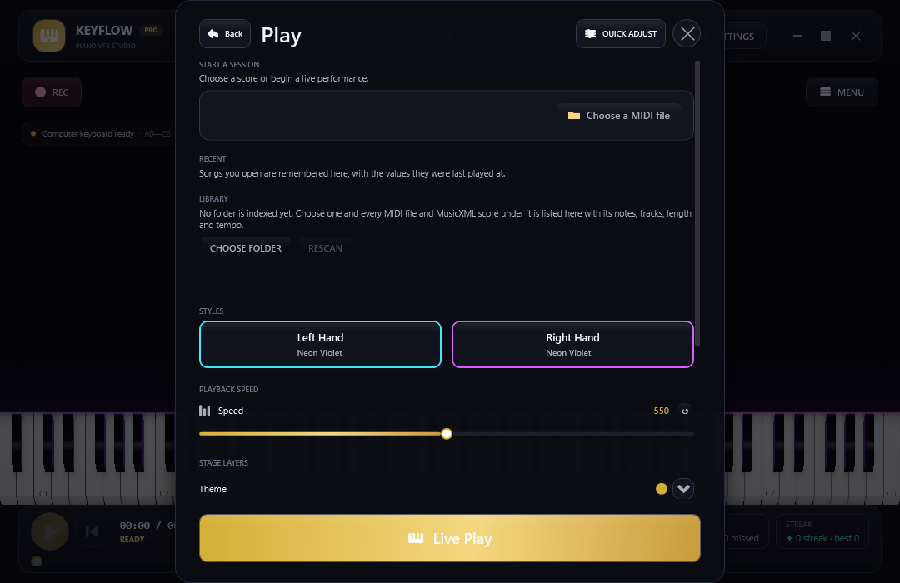

Direct3D 11 GPU stage
An independent render loop with 16-bit HDR, multi-level bloom and up to 24,000 particles. A heavy frame costs frame rate, never MIDI latency.
Piano performance & concert VFX studio
Play, practise and record piano videos at production quality. Notes fall in time, sparks glow hot and fade, and an 88-key keyboard is lit by a ray-traced shader, all drawn on your GPU without ever holding up your MIDI input.
What it does
An independent render loop with 16-bit HDR, multi-level bloom and up to 24,000 particles. A heavy frame costs frame rate, never MIDI latency.
GGX lighting, a softbox with real penumbra, contact shadows and coloured light thrown back by the keys you press.
Incandescent sparks, per-note flames, impact waves and hit-line styles, plus aurora, nebula and ember-haze backgrounds.
Follow along, wait for your note, practise one hand, loop a passage with A-B and slow it down to 50%.
MP4 (H.264 + AAC) with the sound already inside, AVI, or a 32-bit PNG sequence with transparency for Premiere, Resolve and OBS.
Plug in a MIDI keyboard or use the computer keys. A bundled Yamaha grand SoundFont, hall reverb and all three pedals included.
Open MIDI and MusicXML files, share a whole look as one line of text and swap between Concert Grand, Noir and Velvet Gold.
Overlay a webcam with green-screen keying, and see which key your hand is over, with no model to download.
Switch between English and Tiếng Việt without a restart: every label, dialog and error repaints in the same frame.
Gallery
Every picture here is captured by Keyflow in CI, not staged artwork.
Practice mode

Get started
The app is not code-signed, so Windows SmartScreen may warn you the first time: choose “More info”, then “Run anyway”.